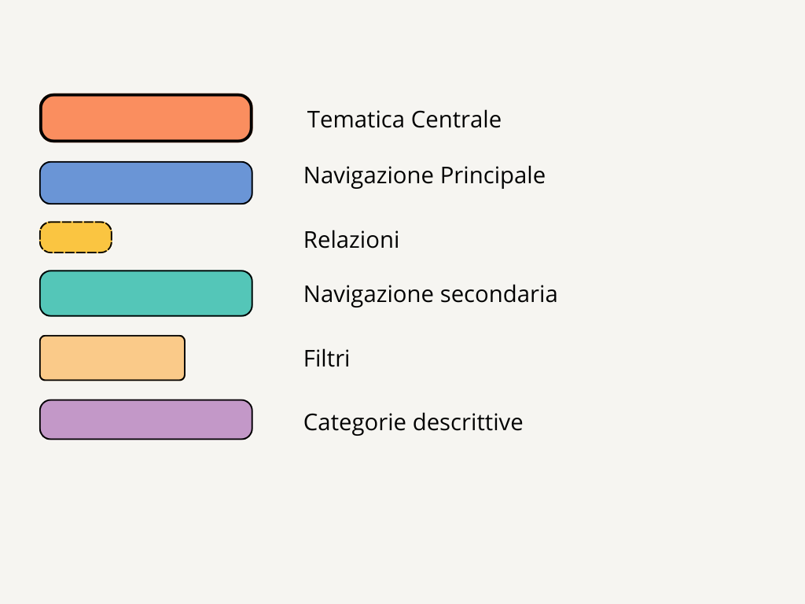

Web Project Plan
1)Brief
Finalità ed Obiettivi
Il sito nasce per raccontare la vita e le opere cinematografiche di Wes Anderson attraverso una struttura digitale intuitiva e accattivante, rivolta sia agli appassionati sia a chi scopre per la prima volta il suo stile. Gli obiettivi specifici:
- Presentare una biografia del regista con una linea temporale illustrata;
- Fornire schede dettagliate per ogni film, con immagini, trama e link al trailer;
- Riprodurre lo stile visivo tipico di Wes Anderson per rendere l’esperienza coerente e coinvolgente;
- Aiutare chi non conosce ancora il regista ad avvicinarsi al suo cinema in modo guidato e accessibile.
Pubblico di riferimento
Il sito è rivolto principalmente a:
- Studenti che vogliono approfondire la figura di Wes Anderson
- Docenti e formatori che cercano un esempio di narrazione digitale legata al cinema d'autore
- Curiosi e nuovi spettatori che vogliono scoprire lo stile visivo e narrativo del regista
- Utenti generici attratti da un’interfaccia semplice, creativa e ispirata all’estetica andersoniana
Accesso
Il sito è accessibile pubblicamente e non richiede registrazione. È stato sviluppato con il framework Bootstrap 5, che garantisce:
- Struttura responsive automatica, con utilizzo delle classi container, row, col-* per adattarsi a tutti i dispositivi
- Navigazione chiara e coerente, grazie all’uso di componenti come navbar, button, card, accordion
- Compatibilità multi-browser (Chrome, Firefox, Safari, Edge)
- Design accessibile, con attenzione a contrasto, leggibilità e struttura semantica
- Tempi di caricamento ridotti, grazie alla leggerezza delle componenti modulari Bootstrap
Contenuti e dati
Il sito dedicato a Wes Anderson è un progetto multimediale e include una varietà di contenuti:
- Testi descrittivi: biografia del regista, descrizioni dettagliate dei film, informazioni su cast,ambientazioni e tematiche ricorrenti
- Immagini ufficiali: locandine, fotogrammi tratti dai film, ritratti del regista e materiali promozionali
- Video selezionati: link ai trailer ufficiali dei film, disponibili su piattaforme come YouTube
Tutti i dati e le risorse sono stati rielaborati in chiave didattica e visuale, impaginati in HTML5 con il supporto di Bootstrap per una fruizione chiara, coerente e responsive.
2)Benchmark
Per progettare il sito sono stati analizzati alcuni esempi online legati al cinema e alle collezioni digitali. L'obiettivo era capire come presentare le informazioni in modo ordinato, visivo e facile da consultare.
- Criterion Collection è stato preso come riferimento per l’aspetto pulito delle pagine, con sfondo bianco, immagini grandi e una struttura semplice ma elegante delle schede filmiche.
- IMDbha ispirato l’organizzazione dei contenuti nelle schede film (titolo, trama, cast, trailer) e il modo in cui le informazioni sono divise per sezioni chiare.
- YouTube è stato usato per incorporare i trailer ufficiali dei film, rendendo ogni scheda più coinvolgente e interattiva.
- Wikipedia ha fornito informazioni biografiche e immagini, ma è servito anche come esempio di pagina ordinata e testuale, utile per strutturare la parte della biografia.
- W3Schools e HTML.it sono stati utilizzati per comprendere e applicare correttamente le parti tecniche di HTML, CSS e layout responsivo, con esempi chiari e spiegazioni semplici.
Tutti questi siti hanno aiutato a creare un progetto coerente, ben strutturato e pensato per essere chiaro anche per chi visita il sito per la prima volta.
3)Struttura
Mappa concettuale
Questa mappa concettuale mostra in modo chiaro come è organizzato il sito su Wes Anderson. Al centro c’è il regista, che rappresenta il tema principale del progetto. Intorno a lui si sviluppano i concetti principali: biografia,filmografiae schede film.
La biografia contiene anche una linea temporale, che serve per raccontare i momenti più importanti della sua vita in ordine cronologico. La filmografia è suddivisa in film, cortometraggi e spot pubblicitari, e ogni opera ha una propria scheda film.
Le schede film sono pagine che raccolgono le informazioni principali: trama, trailer, titolo e altri metadati.
La mappa serve a far capire come sono collegate tra loro le sezioni del sito e come l’utente può navigare tra i contenuti in modo logico e ordinato.
Di seguito la mappa concettuale del progetto, che illustra le relazioni tra contenuti:
Mappa concettuale

Chiave Diagramma
Schema delle dipendenze
Di seguito la mappa concettuale del progetto, che illustra le relazioni tra contenuti:

Schema delle categorie(metadati):
All’interno dell’elemento
di ogni pagina del sito sono stati inseriti i metadati Dublin Core (DC), per descrivere in modo standardizzato le informazioni chiave della risorsa web e favorire l’interoperabilità, la catalogazione e l’indicizzazione da parte dei motori di ricerca o sistemi archivistici.Ecco i metadati utilizzati:
- DC.Title: il titolo della pagina
- DC.Creator: l’autore del sito
- DC.Subject: l’argomento principale trattato nella pagina (temi, parole chiave)
- DC.Description: una breve descrizione testuale dei contenuti della pagina
- DC.Publisher: l’ente o persona responsabile della pubblicazione
- DC.Date: la data di creazione della pagina
- DC.Format: il formato del contenuto
- DC.Language: la lingua del contenuto
Questi metadati sono presenti in tutte le pagine principali del sito, tra cui la homepage, la biografia, la filmografia e le schede filmiche, e rappresentano una scelta consapevole per garantire rigore documentale e tracciabilità del progetto all’interno di un contesto accademico.
4)Layout
Il layout del sito dedicato a Wes Anderson è stato progettato per riflettere la simmetria, i colori pastello e l’estetica pulita tipica del regista.
Tutte le pagine sono costruite con il framework Bootstrap 5, utilizzando la griglia a 12 colonne per garantire un design completamente responsive.
Nella Homepage, sotto all’immagine principale del logo e alla barra di navigazione, si trovano tre sezioni principali:
- Scopri Wes Anderson: una breve introduzione testuale con due card cliccabili dedicate alla biografia e alla filmografia. Ogni card presenta un’immagine, un titolo e un pulsante per accedere alla relativa pagina.
- Citazione + immagine: una sezione centrale con un’immagine del film "The Grand Budapest Hotel" accompagnata da una citazione del personaggio M. Gustave.
- Trailer: una sezione con il video incorporato del trailer del film "The Grand Budapest Hotel", presentato in un riquadro centrato e in formato 16:9.
In fondo alla pagina si trova il footer, con link ai crediti, alla licenza e al Web Project Plan.
Wireframe visivo della homepageLa pagina dedicata alla biografia di Wes Anderson è pensata per offrire un racconto chiaro e completo della sua vita, carriera e stile registico.
- Nella parte iniziale della pagina è presente il titolo "Biografia", seguito da un testo diviso in paragrafi, accompagnato da una grande immagine di Wes Anderson posizionata sulla destra.
- La biografia è scritta in forma narrativa e organizzata in sezioni temporali, per mostrare l’evoluzione personale e professionale del regista.
- A metà pagina è inserito un pulsante che porta alla voce Wikipedia di Wes Anderson per approfondimenti esterni.
- Subito dopo si trova la sezione "Linea temporale", dove gli eventi principali della carriera del regista sono presentati in ordine cronologico attraverso una timeline verticale centrata.
- In fondo alla pagina sono presenti sezioni tematiche sullo stile registico, come simmetria e palette cromatica, seguite da un carosello di immagini che rappresentano visivamente il suo stile.
Infine, il footer chiude la pagina con i crediti, i link alla licenza Creative Commons, al corso universitario e al Web Project Plan.
Wireframe visivo della pagina Biografia
Clicca sul pulsante per visualizzare o nascondere il wireframe.
- Font principale: Quicksand, da Google Fonts, usato per il corpo del testo.
- Font titoli: Georgia, usato per i titoli principali (es. h3), richiama uno stile rétro ed elegante.
#FFC857
Giallo pastello
(bg-wes, bottoni)
#88d3d7
Azzurro pastello
(hover, bordi)
#d3427c
Rosa intenso
(titoli h1/h2)
#fffaf6
Beige chiarissimo
(sfondo sito)
#2f2f2f
Grigio scuro
(testo)
5)Usabilità
Il sito è stato pensato per offrire un'esperienza di navigazione facile, chiara e adatta a tutti, indipendentemente dal tipo di dispositivo utilizzato (computer, tablet o smartphone).
Ecco i principali accorgimenti adottati:
- Struttura chiara: tutte le pagine seguono la stessa organizzazione, con una barra di navigazione fissa in alto e contenuti divisi in sezioni ben distinte.
- Design responsivo: grazie a Bootstrap, il sito si adatta automaticamente a tutte le dimensioni dello schermo, garantendo una buona visualizzazione sia su desktop che su dispositivi mobili.
- Navigazione semplice: l’utente può muoversi facilmente nel sito usando il menu principale, i pulsanti e i collegamenti tra le varie pagine.
- Testi leggibili: sono stati scelti font chiari e facili da leggere, con una dimensione e uno spazio tra le righe adatti alla lettura su schermo.
- Colori ben bilanciati: la palette riprende i colori tipici dello stile di Wes Anderson, ma è stata studiata anche per garantire un buon contrasto e facilitare la lettura.
- Accessibilità: tutte le immagini hanno un testo alternativo (attributo "alt") e il codice HTML segue una struttura semantica per aiutare anche gli screen reader. Sono presenti anche metadati per l’indicizzazione nei motori di ricerca.
L’obiettivo è permettere a ogni tipo di utente — che sia uno studente, un appassionato di cinema o semplicemente un visitatore curioso — di trovare facilmente le informazioni, senza difficoltà e con un’esperienza coerente con l’atmosfera del sito.
6)Servzi
Oltre alla barra di navigazione principale (navbar) presente in tutte le pagine, il sito offre altri strumenti utili per aiutare l’utente a muoversi tra i contenuti in modo semplice e chiaro.
- Breadcrumbs: visibili in tutte le pagine (Biografia, Filmografia, Schede film, Cortometraggi e spot pubblictari), aiutano l’utente a capire sempre in che punto del sito si trova.
- Carosello: nella homepage è presente uno slideshow con immagini a tutta larghezza che rappresentano lo stile visivo di Wes Anderson.
- Card responsive: nella sezione “Filmografia” ogni film è mostrato con una card che contiene immagine, titolo e un pulsante per aprire la scheda dettagliata.
- Filtri per genere: nella pagina Filmografia è presente un semplice sistema di filtro con tasti cliccabili che permette di visualizzare le categorie “Tutti”, “Film”, “Spot pubblicitari” e “Cortometraggi”.
- Trailer ufficiali: ogni scheda filmica include un link al trailer del film su YouTube.
- Pulsante di approfondimento: nella pagina Biografia è presente un pulsante che rimanda alla pagina Wikipedia di Wes Anderson per chi vuole leggere di più.
- Condivisione social: in ogni scheda filmica c’è una sezione “Condividi” con icone che permettono all’utente di condividere la pagina tramite Facebook, X, WhatsApp, Instagram, Telegram, LinkedIn o Email.
7)Bibliografia e sitografia
- Creazione grafica della mappa concettuale – https://www.canva.com
- Diapositive e videolezioni sulla piattaforma – https://virtuale.unibo.it
- Siti web su vari aspetti della programmazione – https://www.w3schools.com/howto/ ; https://www.html.it/ https://getbootstrap.com ; https://mdbootstrap.com
- Font del sito web – https://fonts.google.com
- Framework CSS utilizzato per il layout responsive del sito – https://getbootstrap.com
- Timeline – ispirata alla struttura proposta su https://mdbootstrap.com
- Trailer video dei film – incorporati da https://www.youtube.com
- Biografia di Wes Anderson – sintesi elaborata a partire da fonti pubbliche come Wikipedia ; IMDb e mymovies.it
- Immagini dei film – tratte da https://www.wikipedia.org ; mymovies.it e IMDb
- Modifica delle immagini – https://www.img2go.com
- Sito web pubblicato tramite GitHub Pages – https://cinemanomad.github.io/wes-anderson/